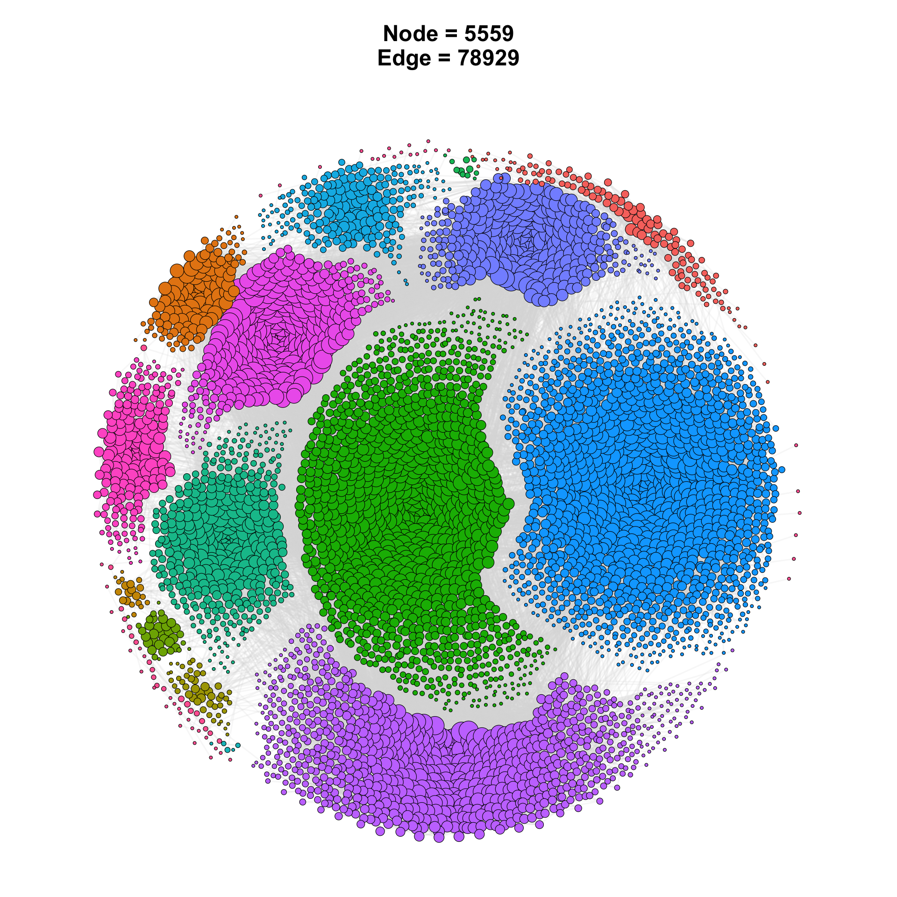
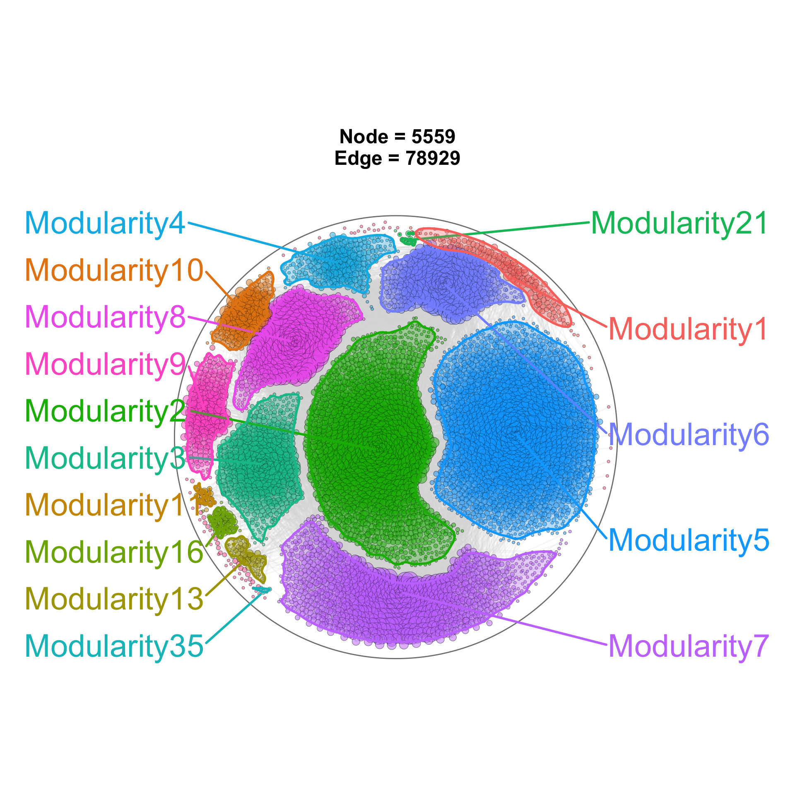
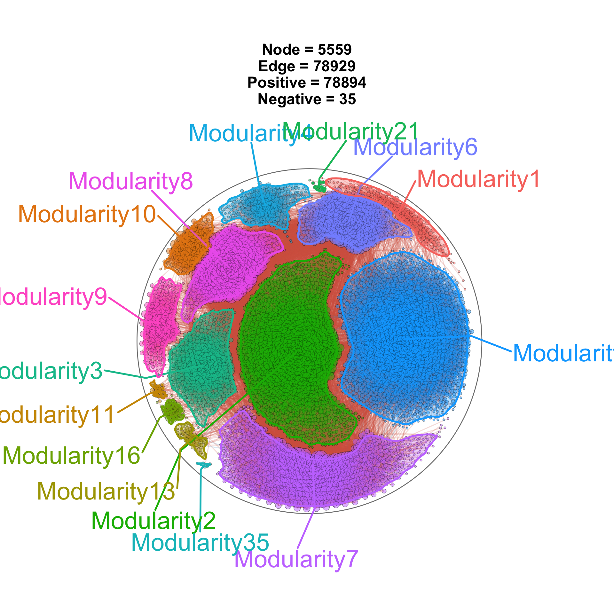
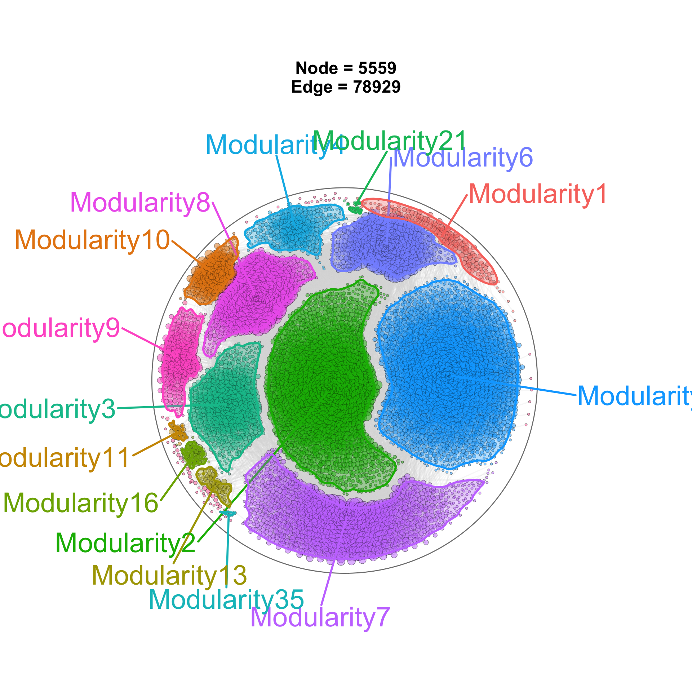
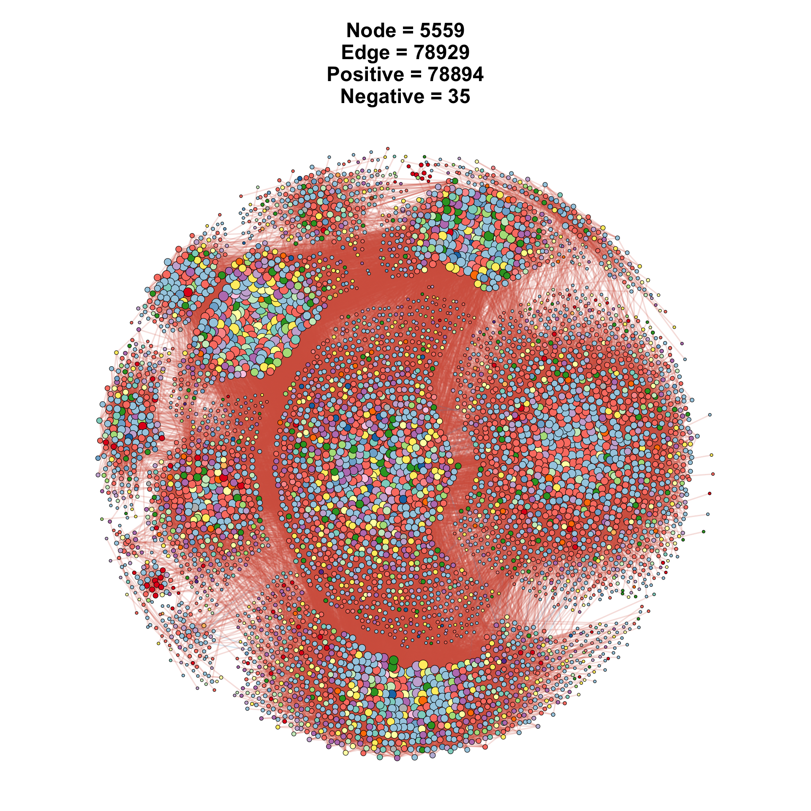
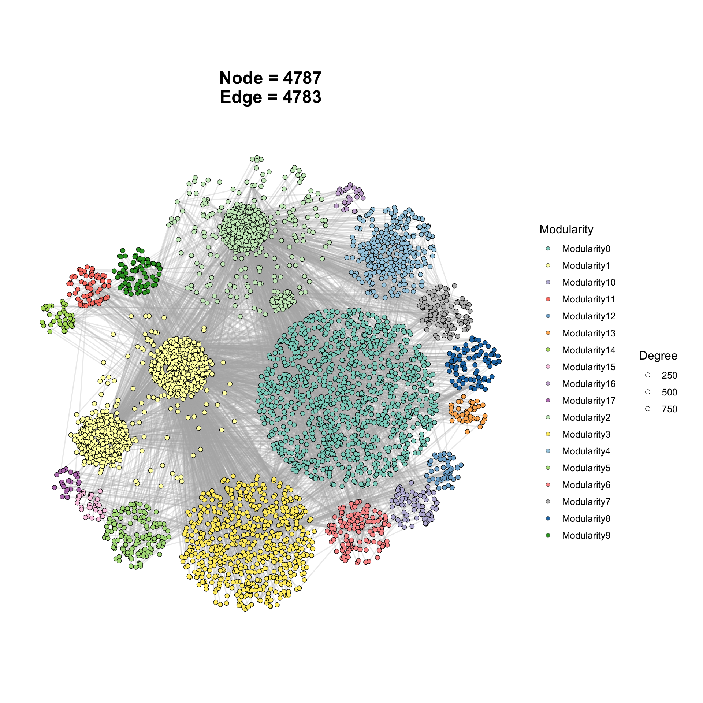

12 Gallery of Reproducible Examples
Load R Package
library(tidyverse) # data manipulation / piping utilities
library(ggNetView) # graph builders + info-extraction helpers12.1 Microbial Community Network
The data from
Liu, X., Wang, M., Liu, B. et al. Keystone taxa mediate the trade-off between microbial community stability and performance in activated sludges. Nat Water 3, 723–733 (2025).DOI:10.1038/s44221-025-00451-6
# Load data
# OTU table: read the pre-filtered ASV abundance data (relative abundance range 0.00001-0.01)
# Use read_delim() to read the CSV file, and convert the first column ("...1") to row names
otu <- read_delim(file = "./Input/Figure3a-b_ASV_data_0.00001_0.01.csv", delim = ",", col_names = T) %>%
tibble::column_to_rownames(var = "...1")
# OTU taxonomy table: read the ASV annotation information from the MiDAS database,
# including taxonomy, Mean Relative Abundance (MRA), and functional annotations.
# This table will be used to annotate the network nodes (e.g. by Phylum).
tax <- read_delim(file = "./Input/Figure3a-b_ASV-MiDAS-MRA-function-taxonomy-all-new.csv", col_names = T, delim = ",")
# Build the network graph object
# build_graph_from_mat() computes pairwise correlations among taxa from the OTU abundance matrix
# and constructs a network graph object for downstream visualization.
obj <- build_graph_from_mat(
mat = otu, # input OTU abundance matrix
transfrom.method = "ln", # data transformation method: natural log (stabilize variance)
method = "WGCNA", # correlation method: WGCNA (weighted gene co-expression network)
r.threshold = 0.44, # correlation coefficient threshold: keep edges with |r| >= 0.44
p.threshold = 0.05, # significance threshold: keep edges with p < 0.05
node_annotation = tax # node annotation table providing taxonomic info for each node
)
# ====== Figure 1: network plot colored by Modularity (module assignment) ======
p1 <- ggNetView(
graph_obj = obj, # input network graph object
layout = "gephi", # layout algorithm: Gephi-style (ForceAtlas2-like)
layout.module = "adjacent", # module layout: place adjacent modules close together
group.by = "Modularity", # grouping variable: color nodes by module ID
center = F, # do not center the network
jitter = TRUE, # add small random offsets to node positions to avoid overlap
jitter_sd = 0.15, # standard deviation of the jitter
shrink = 0.9, # shrink factor: tighten nodes within each module
linealpha = 0.2, # transparency of edges
linecolor = "#d9d9d9" # default edge color: light grey
) +
# Manually assign fill colors for the 16 modules
scale_fill_manual(values = c("#00A9FF", "#0BB702", "#C77CFF", "#00C19A", "#ED68ED",
"#8494FF", "#00B8E7", "#FF61CC", "#F8766D", "#E68613",
"#ABA300", "#7CAE00", "#CD9600", "#00BE67", "#00BFC4",
"#FF68A1")) +
theme(legend.position = "none") # remove legend
# Save Figure 1 as a PDF (commented out; uncomment to enable saving)
# ggsave(filename = "Figure3a-b/Figure3a.pdf",
# plot = p1,
# height = 12,
# width = 12)
p1 # display Figure 1
# ====== Figure 2: add outlier ======
module_colors <- c("#00A9FF", "#0BB702", "#C77CFF", "#00C19A", "#ED68ED",
"#8494FF", "#00B8E7", "#FF61CC", "#F8766D", "#E68613",
"#ABA300", "#7CAE00", "#CD9600", "#00BE67", "#00BFC4",
"#FF68A1")
p2 <- ggNetView(
graph_obj = obj, # input network graph object
layout = "gephi", # layout algorithm: Gephi-style (ForceAtlas2-like)
layout.module = "adjacent", # module layout: place adjacent modules close together
group.by = "Modularity", # grouping variable: color nodes by module ID
center = F, # do not force a node at the layout centre
pointalpha = 0.5, # node transparency (0 = invisible, 1 = opaque)
label = T, # draw module text labels
label_layout = "two_column", # label_layout defaults to "two_column": labels are placed in two fixed
label_wrap_width = 18, # wrap long module / pathway names at ~18 chars per line
label_outer_pad = 0.25, # distance from the network edge to each label column
jitter = TRUE, # add small random offsets to node positions
jitter_sd = 0.15, # standard deviation of the jitter
shrink = 0.9, # shrink factor: tighten nodes within each module
linealpha = 0.2, # transparency of edges
linecolor = "#d9d9d9", # default edge colour: light grey
add_outer = T, # add per-module outer boundary (KDE/HDR contour)
outeralpha = 0.3, # per-module boundary fill transparency
outerwidth = 1, # per-module boundary line width
add_group_outer = T, # add an outer circle around the whole network
fill = module_colors, # <-- node fill colours; module outers use the same palette
color = module_colors # <-- module boundary line colours (matches the fills)
) +
theme(legend.position = "none") # hide all legends
# Save Figure 2 as a PDF (commented out; uncomment to enable saving)
# ggsave(filename = "Figure2.pdf",
# plot = p2,
# height = 12,
# width = 12)
p2 # display Figure 2
# ====== Figure 3: add outlier ======
module_colors <- c("#00A9FF", "#0BB702", "#C77CFF", "#00C19A", "#ED68ED",
"#8494FF", "#00B8E7", "#FF61CC", "#F8766D", "#E68613",
"#ABA300", "#7CAE00", "#CD9600", "#00BE67", "#00BFC4",
"#FF68A1")
p3 <- ggNetView(
graph_obj = obj, # input network graph object
layout = "gephi", # layout algorithm: Gephi-style (ForceAtlas2-like)
layout.module = "adjacent", # module layout: place adjacent modules close together
group.by = "Modularity", # grouping variable: color nodes by module ID
center = F, # do not force a node at the layout centre
pointalpha = 0.5, # node transparency (0 = invisible, 1 = opaque)
label = T, # draw module text labels
label_layout = "two_column_follow", # "two_column_follow": ring layout that follows each module's real
label_wrap_width = 18, # wrap long module / pathway names at ~18 chars per line
label_outer_pad = 0.25, # outer ellipse padding: how far labels sit beyond the network
jitter = TRUE, # add small random offsets to node positions
jitter_sd = 0.15, # standard deviation of the jitter
shrink = 0.9, # shrink factor: tighten nodes within each module
linealpha = 0.2, # transparency of edges
linecolor = "#d9d9d9", # default edge colour: light grey
add_outer = T, # add per-module outer boundary (KDE/HDR contour)
bandwidth_scale = 2.0, # KDE bandwidth multiplier; >1 -> smoother / rounder boundary
outeralpha = 0.3, # per-module boundary fill transparency
outerwidth = 1, # per-module boundary line width
add_group_outer = T, # add an outer circle around the whole network
fill = module_colors, # <-- node fill colours; module outers use the same palette
color = module_colors, # <-- module boundary line colours (matches the fills)
remove = T, # drop the "Others" module from rendering (keep layout intact)
mapping_line = T # colour edges by their sign / weight category
# (e.g. positive vs negative correlations get different colours)
) +
theme(legend.position = "none") # hide all legends
# Save Figure 3 as a PDF (commented out; uncomment to enable saving)
# ggsave(filename = "Figure3.pdf",
# plot = p3,
# height = 12,
# width = 12)
p3 # display Figure 3
# ====== Figure 4: add outlier ======
p4 <- ggNetView(
graph_obj = obj, # input network graph object
layout = "gephi", # layout algorithm: Gephi-style (ForceAtlas2-like)
layout.module = "adjacent", # module layout: place adjacent modules close together
group.by = "Modularity", # grouping variable: color nodes by module ID
center = F, # do not force a node at the layout centre
pointalpha = 0.5, # node transparency (0 = invisible, 1 = opaque)
label = T, # draw module text labels
label_layout = "label_circle", # "label_circle" ring layout that follows each module's real angular
label_wrap_width = 18, # wrap long module / pathway names at ~18 chars per line
label_outer_pad = 0.25, # outer ellipse padding: how far labels sit beyond the network
jitter = TRUE, # add small random offsets to node positions
jitter_sd = 0.15, # standard deviation of the jitter
shrink = 0.9, # shrink factor: tighten nodes within each module
linealpha = 0.2, # transparency of edges
linecolor = "#d9d9d9", # default edge colour: light grey
add_outer = T, # add per-module outer boundary (KDE/HDR contour)
outeralpha = 0.3, # per-module boundary fill transparency
outerwidth = 1, # per-module boundary line width
add_group_outer = T, # add an outer circle around the whole network
fill = module_colors, # <-- node fill colours; module outers use the same palette
color = module_colors # <-- module boundary line colours (matches the fills)
) +
theme(legend.position = "none") # hide all legends
# Save Figure 4 as a PDF (commented out; uncomment to enable saving)
# ggsave(filename = "Figure4.pdf",
# plot = p4,
# height = 12,
# width = 12)
p4 # display Figure 4
# ====== Figure 5: network plot colored by Phylum, with positive/negative edges mapped ======
p5 <- ggNetView(
graph_obj = obj, # input the same network graph object
layout = "gephi", # layout algorithm: Gephi-style
layout.module = "adjacent", # adjacent module layout
fill.by = "Phylum", # grouping variable: color nodes by Phylum
center = F, # do not center the network
jitter = TRUE, # add jitter to node positions
jitter_sd = 0.15, # jitter standard deviation
mapping_line = TRUE, # map edge color by correlation sign (positive / negative)
shrink = 0.9, # shrink factor for modules
linealpha = 0.2, # edge transparency
linecolor = "#d9d9d9" # default edge color (overridden when mapping_line = TRUE)
) +
# Manually assign fill colors for Phylum: a soft palette repeated 3 times to cover many phyla
scale_fill_manual(values = rep(c("#8dd3c7",
"#ffffb3", "#bebada", "#fb8072", "#80b1d3",
"#fdb462", "#b3de69", "#fccde5", "#cab2d6",
"#bc80bd", "#ccebc5", "#ffed6f", "#a6cee3",
"#b2df8a", "#fb9a99", "#bdbdbd", "#a6cee3",
"#1f78b4", "#b2df8a", "#33a02c", "#fb9a99",
"#e31a1c", "#fdbf6f", "#ff7f00", "#cab2d6",
"#6a3d9a", "#ffff99", "#b15928"), times = 3)) +
# Edge colors: red for positive correlations, blue for negative correlations
scale_color_manual(values = c("Positive" = "#d6604d",
"Negative" = "#92c5de")) +
scale_size(range = c(1, 5)) + # map node size to the range [1, 5]
theme(legend.position = "none") # remove legend
# Save Figure 5 as a PDF (commented out; uncomment to enable saving)
# ggsave(filename = "Figure5.pdf",
# plot = p5,
# height = 12,
# width = 12)
p5 # display Figure 5
12.2 WGCNA network
load(file = "./Input/WGCNA.tom-block.1.RData")
TOM_mat <- as.matrix(TOM)
plot.mat = readRDS(file = "./Input/plot.mat.Rds")
trans_TOM <- trans_TOM_in_WGCNA(TOM_mat, plot.mat, top_k = 1)
net <- readRDS(file = "./Input/net.Rds")
module <- data.frame(
ID = names(net$colors),
Module = as.character(net$colors)
)
id <- data.frame(
ID = names(sort(net$colors))
)
obj <- build_graph_from_wgcna(
wgcna_tom = trans_TOM,
module = module,
node_annotation = id
)
obj## # A tbl_graph: 4787 nodes and 4783 edges
## #
## # An unrooted forest with 4 trees
## #
## # Node Data: 4,787 × 8 (active)
## name Module modularity modularity2 modularity3 Modularity Degree Strength
## <chr> <chr> <fct> <fct> <chr> <fct> <dbl> <dbl>
## 1 HBA1_41… 0 0 0 0 0 5 0.578
## 2 HBB_4169 0 0 0 0 0 4 0.507
## 3 CA1_3480 0 0 0 0 0 3 0.360
## 4 PMP2_15… 0 0 0 0 0 2 0.162
## 5 ZC3HAV1… 0 0 0 0 0 2 0.0755
## 6 RGS10_5 0 0 0 0 0 1 0.172
## 7 ITGA2B_7 0 0 0 0 0 1 0.134
## 8 MARK3_9 0 0 0 0 0 1 0.0957
## 9 PTPRJ_10 0 0 0 0 0 1 0.0227
## 10 THOC5_11 0 0 0 0 0 1 0.0447
## # ℹ 4,777 more rows
## #
## # Edge Data: 4,783 × 3
## from to weight
## <int> <int> <dbl>
## 1 121 1075 0.145
## 2 1075 1272 0.246
## 3 93 1066 0.132
## # ℹ 4,780 more rows
p <- ggNetView(
graph_obj = obj,
layout = "WGCNA", # 使用 WGCNA 布局
layout.module = "order", # 或其他选项
group.by = "Modularity",
fill.by = "Modularity",
center = F,
shrink = 0.95,
jitter = F,
jitter_sd = 1.5,
pointsize = c(2,2),
seed = 1
)
p